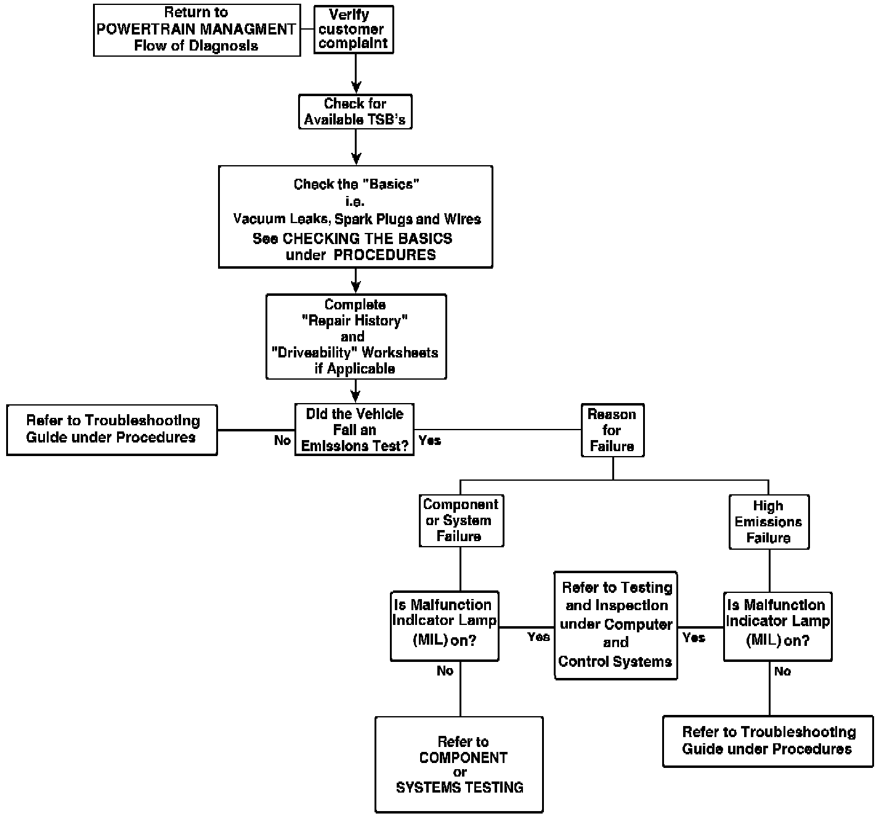

Operation CHARM
: Car repair manuals for everyone.
Home
>>
Acura
>>
1995
>>
Integra (RS, LS) L4-1834cc 1.8L DOHC PFI
>>
Repair and Diagnosis
>>
Powertrain Management
>>
Emission Control Systems
>>
Testing and Inspection
>>
Flow of Diagnosis
Flow of Diagnosis
Flow Of Diagnosis:
